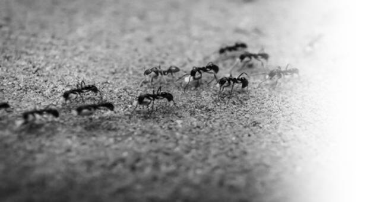
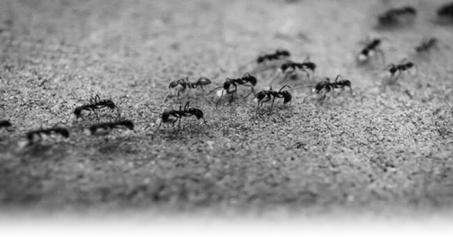

HORMIGAS
Las hormigas, conocidas a nivel científico como Messor capitatus, son unos de los insectos más comunes. Concretamente pertenecen a una familia de insectos eusociales que, como las avispas y las abejas, forman parte del orden de los himenópteros. Existen más de diez mil especies de hormigas. No hay que ser un animal de grandes dimensiones para dejar una huella sobre la Tierra.